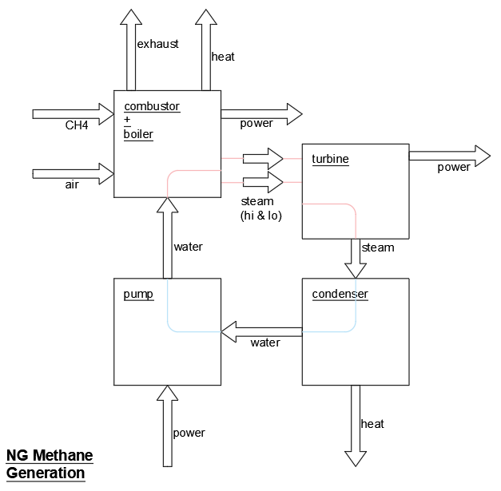
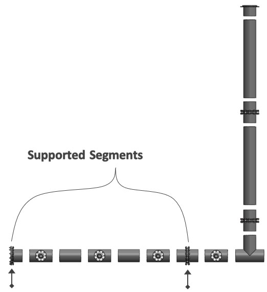
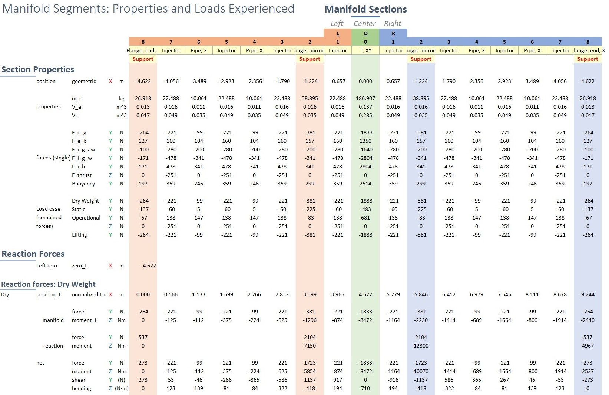
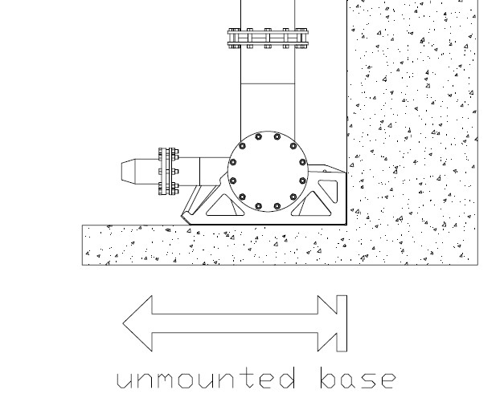
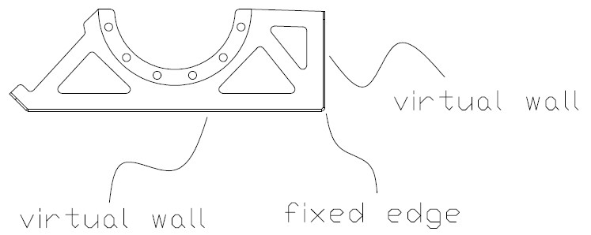
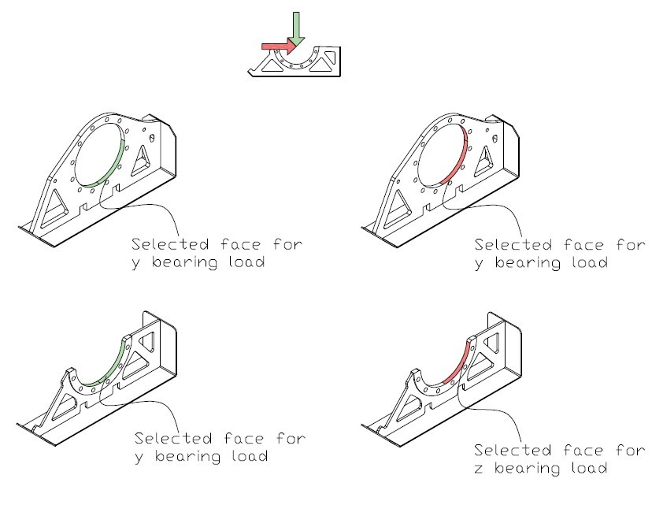
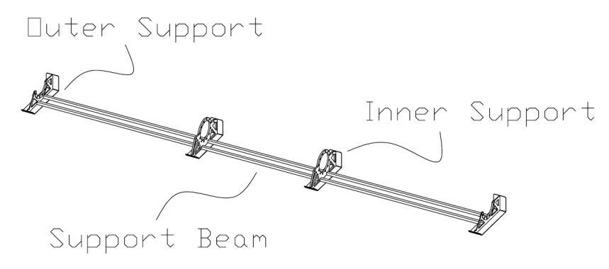
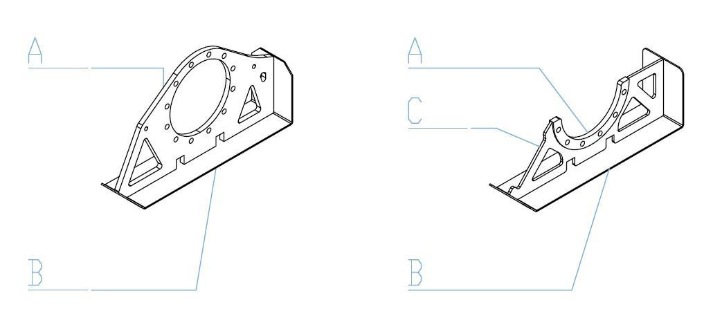

beccs exergy analysis
This project was presented as a requirement for the course MECH 450C: Energy Conversion and Storage, taught by Professor Andrew Rowe. This project was done by myself, Jersey Kertawidjaja, and my teamate Pouria Fyezi Oskouei.
Background and Objectives
One of the biggest challenges in the energy industry since industrialization is how to overcome greenhouse gas (GHG) emissions, especially in the past three decades. In general, there are three ways to alleviate this problem: 1- Utilizing more efficient energy systems 2- Using renewable energy sources 3- Finding a way to lower the ever-growing amount of GHGs already being emitted in the atmosphere over a long time.
The latter method will be the focus of this project. Since carbon dioxide (CO2) presents itself as a major GHG causing climate change, it is the substance in particular that is aimed to be reduced. To have a better understanding as to why this is an issue to be addressed, the pre-industrial CO2 amount in the atmosphere was 280ppm (part per million) or less. However, this has risen to more than 419ppm. This increase indicates that the amount of CO2 released in the past two centuries is more than 1T tons (1012 Tons=1015 Kg). The increase causing climate change, which is one of the determinant reasons resulting in 1.2 °C increase in average global temperature relative to the late-19th century. It is estimated, with the same slope of GHG emissions, at the end of this century the mole fraction of CO2 in the atmosphere will reach about 800ppm which will result in more than 4.5 °C temperature rise globally.
One of the proposed and currently used method to remove carbon from the atmosphere is called Direct Air Capture (DAC), which involves the capture of CO2 directly from ambient air. It uses a combination of chemical processes and engineered systems to selectively extract CO2 molecules from the atmosphere, even when it is present in trace amounts. DAC facilities typically consist of large fans or other air intake mechanisms that draw in air, which is then processed through a series of chemical sorbents or absorbents designed to capture the CO2. Once the CO2 is captured, it can be separated from the sorbent, compressed, and stored for subsequent use or long-term sequestration.
The captured CO2 can be used for a variety of purposes, including carbon-neutral fuel production, enhanced oil recovery, or for direct underground storage in geological formations. DAC is considered a promising technology for addressing the challenge of reducing atmospheric CO2 concentrations and mitigating climate change. However, it is still relatively expensive and energy-intensive compared to some other carbon removal methods.
Methods
The purpose of this project is to conduct an exergetic analysis of a DAC system coupled with a power cycle (that runs on natural gas) and see how DAC affects the efficiency of the system. This configuration of biogas power cycle and carbon capture is called Bioenergy with carbon capture and storage (BECCS) and is quite an alluring solution to the climate issue.
The exergy destruction in the system can be pointed out in the process and so does respective solutions to alleviate them. Moreover, as opposed to the DAC plants being currently run, we aim to find a better input energy source (other than natural gas, which in its own utilization produces CO2) and evaluate their corresponding feasibility.
Throughout the upcoming sections of the report, exergy analysis of a power cycle and CCS will be conducted separately. Total exergy destruction will be calculated from the cumulative amount of each device of each system, done to allocate the locations of large exergy destruction. The exhaust of the power cycle system would then be coupled with the inlet air of the CCS. The affects of change in concentrations can be noticed in CCS fuel requirements, and so does how the CCS affects the efficiency of the power cycle, as it requires more fuel input.
Result of Exergetic Analysis
Exergetic calculations need to be done on the power cycle system as well as the carbon capture component. Exergy of the states present in the components must be defined. Below are the expressions that will be used for defining the exergetic values:
| definition | expression |
|---|---|
| Energy Balance | \[{dE \over dt}=Q-W+\sum{ \dot {m_i}} {h_i}^* - \sum{ \dot {m_e}} {h_e}^* \] |
| Exergetic Balance | \[{dE_x \over dt}=\sum{ {\dot E_{xQ}}} - \dot W + \sum{ {\dot m e_{xf}}} - \dot \Pi_D\] |
| Flow Exergy | \[e_{xf} \equiv (h-h_0) - T_0(s-s_0)+ {{V^2}\over2} + gz +e_{ch} \] |
| Chemical Exergy | \[\bar e_{ch} = \sum_{\alpha}^n(\bar e_{ch} + \bar R T_0 ln(x_\alpha))x_\alpha \] |
| System Efficiency | \[\eta_{system} = {E_P \over E_F} = 1 - {E_D \over E_F} \] |
natural gas power cycle analysis
In order to compare the system effeciency of a typical natural gas (methane) power cycle, equipt with CCS, with a biogas (methane from biological sources) power cycle system absent CCS, the schematic of the process of power generation is needed.
Specifications
| Name | Priority (1 to 3) | Description |
|---|---|---|
| Lifting Capacity | 3 | Must be able to carry: ‚Ä¢ Manifold mass of 141 ùëòùëî ‚Ä¢ Water mass of 861 ùëòùëî ‚Ä¢ The mass of the bracket chassis |
| Bracket Structural Support | 3 | Must be able to withstand: ‚Ä¢ Submerged manifold mass. ‚Ä¢ Thrust generated by the nozzle of 453 ùëôùëèùëì |
| Local Condition | 3 | The design solution must be able to operate in: ‚Ä¢ Local ambient temperature 30ùê∂ ‚Ä¢ Water temperature from 40 ùê∂ to 50 ùê∂ ‚Ä¢ Suspension density of 5000 ùëùùëùùëö ‚Ä¢ Acidity of 4 ùëùùêª to 6 ùëùùêª |
| Longevoty and Maintainance | 2 | • The maintenance period should not span shorter
than 3 ùë¶ùëíùëéùëüùë†, that of a typical surface aerator. ‚Ä¢ Able to be feasibly extracted for maintenance through reasonable means. |
Final Design
The final design of the piping manifold was a culmination of a thorough and comprehensive process that involved simulation analysis, extensive client consultation, and meticulous material selection and research. By leveraging these key factors, the design team was able to develop a robust and optimized solution to meet the project's objectives and requirements.
 Throughout the design process, simulations played a crucial role in validating the structural integrity and
performance of the support chassis. Advanced simulation tools allowed the team to
assess the stress distribution, load bearing capacity, and deflection of the design under two critical
loading scenarios. As a result, weak points were identified and addressed early in the design phase,
leading to an optimized and reliable final solution. Client consultation and feedback were paramount in
shaping the final design. Regular meetings and discussions with the client allowed the design team to
gain valuable insights into specific needs and preferences of the end-user. By incorporating the client's
input, the final design not only met technical specifications but also aligned perfectly with the client's
vision and requirements.
Throughout the design process, simulations played a crucial role in validating the structural integrity and
performance of the support chassis. Advanced simulation tools allowed the team to
assess the stress distribution, load bearing capacity, and deflection of the design under two critical
loading scenarios. As a result, weak points were identified and addressed early in the design phase,
leading to an optimized and reliable final solution. Client consultation and feedback were paramount in
shaping the final design. Regular meetings and discussions with the client allowed the design team to
gain valuable insights into specific needs and preferences of the end-user. By incorporating the client's
input, the final design not only met technical specifications but also aligned perfectly with the client's
vision and requirements.
 Additional to the chassis the team wanted to incorporate a method of retaining the downpipe of the manifold from tipping during extraction.
The team investigated many different solutions such as custom brackets or chains but ended up with the design pictured below utilizing rope
and wraparound cleats.
Additional to the chassis the team wanted to incorporate a method of retaining the downpipe of the manifold from tipping during extraction.
The team investigated many different solutions such as custom brackets or chains but ended up with the design pictured below utilizing rope
and wraparound cleats.
One of the first steps taken in analysing the chassis design was an estimation of the loads and reactions experienced by the chassis supports. This was achieved by first examining the forces the manifold itself would be subject to under a determined set of conditions.
Analysis
One of the first steps taken in analysing the chassis design was an estimation of the loads and reactions experienced by the chassis supports. This was achieved by first examining the forces the manifold itself would be subject to under a determined set of conditions.
Identification of Loads
Dryweight
The empty manifold is supported by the chassis which is in contact with the ground. The ensemble is un-immersed. The only body force experienced is gravity.
Static
The manifold and chassis are seated at the bottom of a lagoon and immersed in a prescribed depth of wastewater, the manifold is not operational and thus the manifold internal control volume also hosts still wastewater in equilibrium with the free surface.
Operational
As with the prior condition, the manifold and chassis are seated at the bottom of the lagoon and immersed in a prescribed depth of wastewater, however the manifold is in an operational state. The internal control volume of the manifold hosts aerated wastewater however and the manifold is subject to thrust loading.
Lifting
The un-immersed and empty manifold and chassis see no planar support as they are lifted by hoist-points located on the chassis.
Segmenting the Manifold
As the manifold is a large assembly with complex geometry the approach for load analysis would be simplified consisted of breaking the manifold up into smaller segments and proceeding in a piece-wise manner. After which, the loading on the support chassis via the connected pieces could be conducted. The relevant forces acting on each manifold segment were gravity, bouyancy, and the thrust presented by the injectors. The physical properties for each segment were obtained using SolidWorks and consisted of finding volumes, masses, spans, and centroids for both the external (shell) and internal (water and/or air) segment regions. These properties were then aggregated in a spreadsheet and used to calculate the net forces acting on each segment. The calculated segment forces were then mapped out along the span of the manifold (see image below of the partial spreadsheet), from this shear-bending moment diagrams could be made and the reactions at each of the supports could be found (see Free Body Diagrams). This was done for all load cases except Lifting, as it represents a more complex case and requires prior knowledge of the chassis mass and geometry.



Bracket Simulation
The analysis of the design chassis utilizes the loads obtained from the load analysis. The most critical loading scenarios involve the bracket bearing the individual forces presented by the thrust of the nozzles. SolidWorks Static simulations were utilized to obtain a Von-Mises stress map to indicate the highest stress present in each bracket. Within computational analysis the correct materials, connections between parts, restraints (immovable points to set a boundary condition) and loading needs to be specified. SolidWorks static simulations offer a diverse repertoire of materials complete with property sheets, which conveniently includes AISI 316 grade stainless steel
Simulation Connections and Restraints
 For the single unit analysis, the component interactions (intersection, adhesion) were limited to a bonding contact, emulating a component or model with constituent bodies that had been welded or adhered together. In order to prevent interference
(merging) of the solid materials, a global contact interaction was established. Although a global interaction was set, the part consists of two to three metal components that needs to be welded together. For this an edge weld connection
was applied to the relevant corners. This feature would then be used as a reference for the recommended weld diameter at the end of the simulation. The edge-weld connections are located in between contacting edges of any stainless-steel
parts.
For the single unit analysis, the component interactions (intersection, adhesion) were limited to a bonding contact, emulating a component or model with constituent bodies that had been welded or adhered together. In order to prevent interference
(merging) of the solid materials, a global contact interaction was established. Although a global interaction was set, the part consists of two to three metal components that needs to be welded together. For this an edge weld connection
was applied to the relevant corners. This feature would then be used as a reference for the recommended weld diameter at the end of the simulation. The edge-weld connections are located in between contacting edges of any stainless-steel
parts.
Fixtures are required to set a boundary condition in a stress simulation. Fixing the proper geometry on the part analysed is a crucial part of the analysis. The selection of the restraints within the simulation shall model accurately on how the part is restrained in its real-life application. the image on the left shows how the chassis will interact with the lagoon floor and walls while it is in its operating condition. The chassis will not be bolted down unto the lagoon (neither the floor, nor the walls). The sheer weight of the manifold and chassis will provide the downforce required to anchor the array. With the addition of the thrust generated from the nozzle that will push up the chassis skids against the wall, the manifold will be secured throughout operation.
 The image on the right shows the chosen fixtures that the team believed to be the best way to represent the real-life restraints. A virtual wall will be modeled for the wall and floor of the lagoon, it will only allow compressive action of the part against those walls. An edge at the corner of the skid plate will be a fixed geometry, not able to be displaced. These restraints are not a 100% accurate, although it is the best representation that allows for a single stress unit analysis. A more accurate restraint representation could be modeled, but the manifold system would need to be included in the analysis as well. Although the numerous complicated connections and computational time might not be worth the results.
Bracket Loading
The external forces are applied on the parts as a “bearing load”, as it would allow for a sinusoidal distribution of the load from the manifold onto the support. Split lines were made in order to allow selections of the relevant faces that would be affected by the forces, as illustrated.
Results
Inner Bracket Stress Results
| Resultant Reactions | Operational Case | Lifting Case |
|---|---|---|
| Gravity | 5.232 MPa | |
| Nozzle Thrust | 5.796 MPa | |
| Gravity + Nozzle Thrust | 4.744 MPa | |
| Lifting | 4.341 MPa |
Outer Bracket Stress Results
| Resultant Reactions | Operational Case |
|---|---|
| Gravity | 1.153 MPa |
| Nozzle Thrust | 1.136 MPa |
| Gravity + Nozzle Thrust | 1.149 MPa |
Bracket Bouyancy Loading
 Based on the force calculations in the excel sheet, the manifold experience a net
of upwards force due to the buoyancy force present when the manifold assembly is submerged. A static
analysis must be conducted to ensure that there is enough weight to prevent the manifold to float up. A
similar simulation through SolidWorks was done. Different restraints and bearing load conditions wre used.
Based on the force calculations in the excel sheet, the manifold experience a net
of upwards force due to the buoyancy force present when the manifold assembly is submerged. A static
analysis must be conducted to ensure that there is enough weight to prevent the manifold to float up. A
similar simulation through SolidWorks was done. Different restraints and bearing load conditions wre used.
 As the buoyancy force is induced by the manifold assembly, the force is
distributed amongst the bolt holes' upper surfaces. A virtual wall restraint was also placed on to any
surfaces that cannot deform against the lagoon floor and walls. This analysis is done in a chassis assembly, as can be seen on the figure on the right.
This was done to include the mass of the beam as it contributes significantly to the gravitational force of the chassis resisting the
buoyant force.
As the buoyancy force is induced by the manifold assembly, the force is
distributed amongst the bolt holes' upper surfaces. A virtual wall restraint was also placed on to any
surfaces that cannot deform against the lagoon floor and walls. This analysis is done in a chassis assembly, as can be seen on the figure on the right.
This was done to include the mass of the beam as it contributes significantly to the gravitational force of the chassis resisting the
buoyant force.
Bouyant Forces Stress Results
| Resultant Reactions | Inner Support | Outer Support | Chassis Assembly |
|---|---|---|---|
| Bouyancy + Weight | 0.6 MPa | 1.6 MPa | 7.2 MPa |
Vibrational Study
 Vibrational analysis is of utmost importance for this project. Rotating equipment, such as the pump and
motor upstream, would induce a frequency excitation to the manifold array. Whenever an induced
frequency exists in any mechanical system, an excitation amplitude might find resonance in the system.
These amplitudes can cause loading into the systems and are undesirable since it can cause fatigue or
even instantaneous failure. This relationship of the excitation amplitudes are a function of the natural
frequency and induced frequency of the system, as well as the damping of the system. In a real-life
system, with an infinite degree of freedom, there are an infinite number of frequency modes. The
excitation frequency of the system, being the frequency of the pump, shall not reside in any of these
mode frequencies. But with a higher mode number, the amplitude of the excitation become less and
less relevant. Hence the avoidance of the first three modes would be the minimal requirement, with the
addition of the avoidance of a dramatical change in excitation participation in any one direction near the
excitation frequency.
Vibrational analysis is of utmost importance for this project. Rotating equipment, such as the pump and
motor upstream, would induce a frequency excitation to the manifold array. Whenever an induced
frequency exists in any mechanical system, an excitation amplitude might find resonance in the system.
These amplitudes can cause loading into the systems and are undesirable since it can cause fatigue or
even instantaneous failure. This relationship of the excitation amplitudes are a function of the natural
frequency and induced frequency of the system, as well as the damping of the system. In a real-life
system, with an infinite degree of freedom, there are an infinite number of frequency modes. The
excitation frequency of the system, being the frequency of the pump, shall not reside in any of these
mode frequencies. But with a higher mode number, the amplitude of the excitation become less and
less relevant. Hence the avoidance of the first three modes would be the minimal requirement, with the
addition of the avoidance of a dramatical change in excitation participation in any one direction near the
excitation frequency.

The presented graph illustrates the Modal Cumulative Effective Mass Participation Factor (CEMPF), showcasing its distribution across three distinct axes in relation to frequency. This insightful data originates from a simulation conducted on an undamped model of the system, capturing its dynamic characteristics without accounting for immersive attenuation effects. This graph communicates the percentage of the total mass being excited in the three-axial directions, growing with higher modes. The upstream motor and pump, both harmoniously operating at approximately 24.11 ùêªùëß. As depicted, the CEMPF values along any given direction, prior to this frequency threshold, remain constrained within 25 % range. This observation underscores the systems resilience to excessive modal participation in its pre-operational state. Furthermore, the operational frequency distinctly segregated itself from the collection high-magnitudes modes, indicating a favorable isolation from potential resonant interactions. The vibrational study was conducted with no damping consideration from the wastewater, which would only reduce the amplification caused by the excitation frequency.
Fatigue
All objects under any type of loading undergoes fatigue, as the loading it experiences varies throughout its lifetime. Even for “static” objects, small variations of loading would cause an alternating loading condition that would reduce the strength of the object below its yield strength.
In the case of the support chassis, it is of the utmost importance that a fatigue analysis is conducted. Although the load experienced by the chassis would ideally be constant throughout its operation, it would be unlikely. Rotating equipment, such as the pump that is present in the aeration system, are subject to frequency changes. Even if the change of the amplitude is low, the fact that the injector nozzle is expected to have a lifetime of five years, the reduced strength of the part would drop significantly from its yield strength. This is due to a logarithmic relationship between the material strength and its lifetime under time-varying loads, to put it simply, parts that experience alternating stress close to its yield strength has a lower lifetime.
Fatigue Analysis Methodlogy
- The utilization of stress results from the static analysis in both the combined Dry- Weight/Operational condition and the Lifting condition.
- The justification and use of stress-life tabulated values of 316 Stainless-steel.
- The specification of the desired life cycle of the chassis based on the requirements of the project.
- The review of the fatigue analysis.
Stainless Steel Stress-Cycle Relationship
The United-States Nuclear Regulatory Commission had conducted several tests to observe the environmental effects on fatigue testing of Carbon, Low-Alloy Steels, Austenitic Stainless Steels, and Alloy 600. This test study was conducted to compare the results between fatigue tests done on high temperature immersed environment with fatigue tests based on ASME codes for fatigue testing, which did not take into account environmental effects that present in power-plant reactors (emersed in high- temperature oxidized water). The team concluded that this paper would be a good source of reference for the S-N curve to be used in the fatigue simulations. The wastewater condition, having high temperature (50 ùê∂) oxygenated water, would receive a more conservative strength-life relationship compared to a S-N curve derived from the elastic modulus from the material.
It was found that the temperature range (25 ¬∞ùê∂ - 450 ¬∞ùê∂) did not greatly affect the fatigue strength of type 304 and 316 Stainless Steel [5]. Hence the recommended ASME tabulated data for fatigue-life is a safe assumption to use in the fatigue analysis of the chassis, which will be submerged within 40 ¬∞ùê∂ - 50 ¬∞ùê∂ water.
Another consideration that should be made would be the effects of corrosion presented by the chemical make-up of the wastewater. The University of Žilina conducted a laboratory fatigue testing for high- cyclical lifetime (from 107 to 109 cycles) for marine grade stainless steel (304 and 316 grades). The purpose of their study is to generate a new S-N relationship for stainless steel that undergoes low stress for a long lifetime, affected by corrosion. The concern for a material under low stress is crack nucleation, and through this study, it was found that the endurance of 316 stainless steel was reduced to 65 ùëÄùëÉùëé (6.4 ùëòùë†ùëñ). The study was conducted with 12 ùëöùëö diameter cylindrical steel samples etched with a mixture of acid and glycerin, with fully reversed (loading ratio ùëÖ = ‚àí1) with a frequency of 20 ùëòùêªùëß up to 2 √ó 109 ùëêùë¶ùëêùëôùëíùë†

Fatigue Simulation and Results
Fatigue simulations done within SolidWorks utilizes the input event from a static study. The fatigue analysis done takes an input from the static study on each support from its reaction obtained from the thrust forces, this was done as alternating stress in the system is caused by the pump motor. The injector nozzle system is expected to last five years before any maintenance as per specifications. With the frequency of 24.11 ùêªùëß from the pump motor, a total of 4 √ó 109 ùëêùë¶ùëêùëôùëíùë† are induced unto the supports. The loading ratio was chosen to be ùëÖ = 0.9, since it is a reasonable expected value of frequency variation in the pump motor. Since the S-N values utilized were from fully reversed experimentation, the Soderberg mean stress theory was applied to the study as it is the most conservative correction method.
Results
| Inner Support | Outer Support | Lifetime |
|---|---|---|
| 4.630 MPa | 1.961 MPa | 4E9 cycles |
Design Details
Since the client already had provided specific specifications for the piping manifold, the team's primary focus shifted towards designing the support chassis, which encompassed the support brackets and beams. This phase allowed the team to concentrate on crucial aspects like material selection and costing to ensure the support chassis complemented the existing manifold system seamlessly.
To proceed with the material selection, various factors were taken into account, such as the load- bearing capacity requirements, environmental conditions, longevity, and compatibility with existing manifold. Extensive research and consultations with experts in material engineering were conducted to identify the most suitable materials that met both performance and budgetary constraints. Recognizing the criticality of obtaining accurate and competitive costing information, the team proactively reached out to several reputable manufacturing companies. By doing so, comprehensive quotations for the materials, fabrication, and assembly processes involved in constructing the support chassis. When designing the retaining system, the team decided to source store-bought components to keep costs down.
Materials
The material chosen for the support chassis was SS 316 (stainless steel grade 316) due to its many advantages in wastewater environments. SS 316 is widely recognized for its excellent corrosion resistance, making it highly suitable for prolonged exposure to the harsh and corrosive conditions present in wastewater treatment plants. Additionally, SS 316 offers superior strength and durability, ensuring, the support chassis can withstand the structural loading conditions and maintain its integrity over an extended service life. The material’s resistance to pitting and crevice corrosion further enhances its reliability in wastewater applications, providing a robust and long-lasting solution for the proposed injector system. Moreover, SS 316’s ease of maintenance and cleaning contributes to the overall maintainability of the support chassis, aligning with the client’s preference for a solution that is relatively easier to maintain compared to other alternatives.
The retaining system is comprised of store-bought components. The material for each component was selected due to the somewhat harsh environment of the wastewater lagoon. The wraparound rope cleats are made from the same material as the support chassis, 316 stainless steels. The rope used is a ¾ inch polypropylene rope designed for wet environments, and the surface guards are a polyurethane foam with an adhesive back designed to be used outdoors.
Manufacturing
In the pursuit of improving efficiency and reducing costs, the selection of appropriate manufacturing methods plays a vital role. When it comes to crafting the support chassis for our project, we considered two primary options: waterjet cutting and plasma cutting. Each method offers distinct advantages, making it essential to carefully consider their respective capabilities to determine the most suitable approach for our precise needs.
Water jet cutting utilizes a high-pressure stream of water to cut a wide range of materials, including metals, plastics, and softer substances like paper and foam. Its non-contact nature and no increase in temperature make it ideal for conductive metals, ensuring temperature regulations. Waterjet cutting offers exceptional accuracy with tolerances as low as 0.001 ùëñùëõ, resulting in superior cut quality and reduced secondary finishing requirements. Plasma cutting on the other hand, uses a high-pressure gas jet to cut conductive materials like metals and steel. It boasts higher cutting speeds, making it suitable for rapid production requirements. However, plasma cutting can cause stress and heat-related effects on the material, potentially leading to warping or distortion.
The comparative analysis reveals key differences between the two methods. Waterjet cutters have higher running costs due to expensive abrasives, but parts can last for thousands of hours, resulting in lower maintenance. They support almost all materials and produce accurate, high-precision cuts with no heat-related effects. In contrast, plasma cutters have lower running costs and higher cutting speeds, but they are limited to metal-cutting applications and may require more frequent maintenance due to wear on parts.
After careful consideration, waterjet cutting was chosen for the support chassis manufacturing due to its numerous advantages, which clearly outweighed the benefits offered by plasma cutting.
Costing
Once the design was completed the team sourced costs for each component of the system. The prices were then summed to reach a total price of $11,008.26.
Brackets 316 SS
| Thickness | 0.25" B | 0.50" C | 1.00" A |
|---|---|---|---|
| Forming | $95.25 | ||
| Welding | $254.00 | $508.00 | |
| Waterjet | $96.00 | $147.00 | 851.20 |
| Material | $418.75 | $1,269.00 | $4,086.00 |
| Subtotal | $610.00 | $1,670.00 | 5,445.00 |
| Total | $7,725.00 |
Hollow tube (McMaster-Carr: 2937k24)
| Total Length | wall thickness | height | width | count | 6 ft lg | total cost |
|---|---|---|---|---|---|---|
| 26.25 ft | 0.25 | 2 | 2 | 2 | $344.07 | $3,010.23 |
retaining system
| component | mecmaster-carr # | quantity | unit cost |
|---|---|---|---|
| Rope Cleat | 33805T23 | 2 | $79.76/unit |
| Surface Guard | 21705T46 | 3 | $31.92/unit |
| Rope | 3875T7 | 25 ft | $0.71/ft |
| Total | $273.03 |